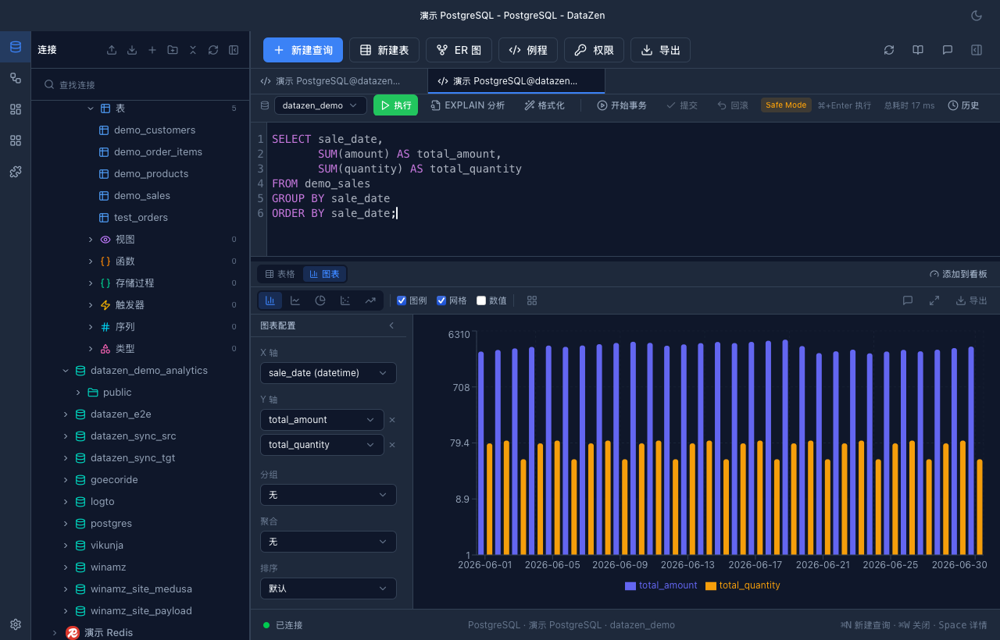
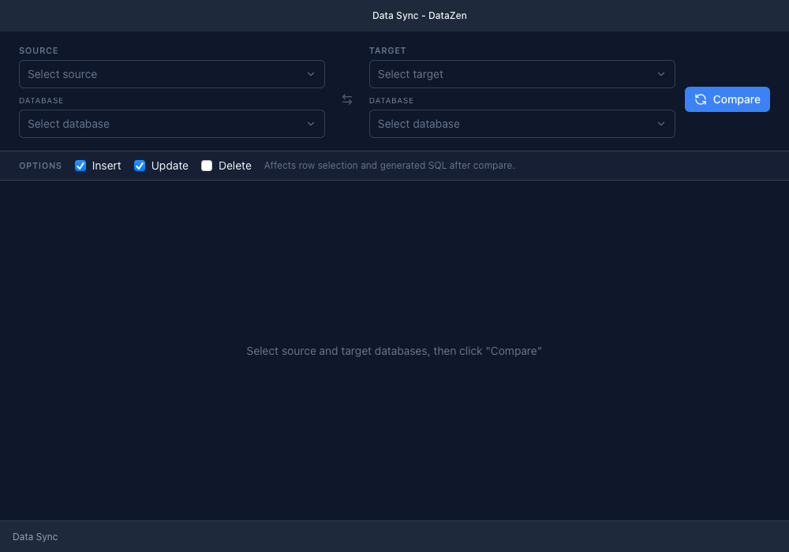
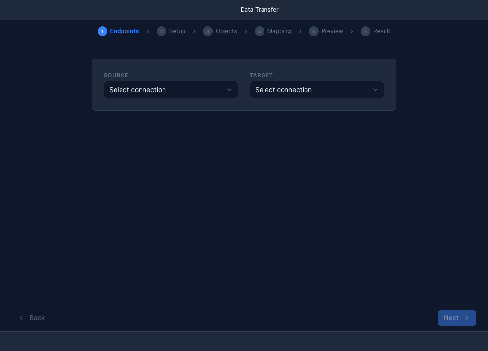
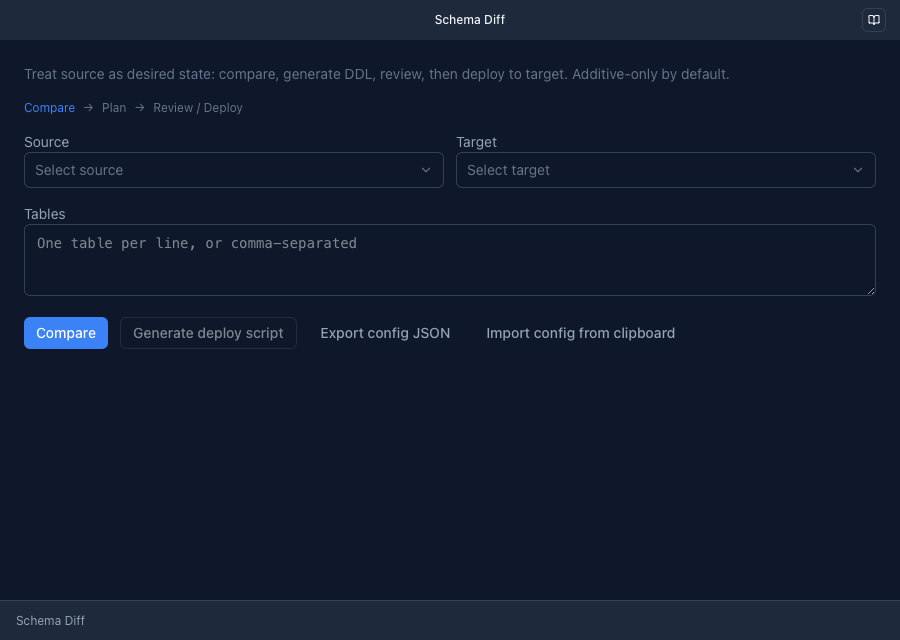

1. 安装与启动
DataZen 是免费开源（GPLv3）的跨平台桌面数据库客户端，基于 Tauri v2 + Rust 构建， 无需注册账号。
| 平台 | 安装包 |
|---|---|
| macOS Apple Silicon / Intel | .dmg |
| Windows x64 | .exe / .msi |
| Linux x86_64 | .deb / .rpm / .AppImage |
- 前往 GitHub Releases 下载对应平台的安装包。
- 安装并首次启动后进入欢迎页，可点击「创建第一个连接」或「导入连接」 （支持从 TablePlus、Navicat、DataGrip、DBeaver、DBX 等工具迁移）。
xattr -cr /Applications/DataZen.app，或在系统设置中右键 → 打开一次即可。
2. 界面总览

主工作区：左侧连接树 + 标签页 + AI 侧边栏
- 左侧功能栏：连接（Connections）、Workflows、看板（Dashboards）、 工作区（Workspace，插件页面）、插件（Plugins）；底部为设置（Settings）。
- 主内容区：连接树 + 多标签页查询区；设置页与新建议接对话框均在主窗口内打开。
- 菜单栏：文件（新建连接、Data Sync、Schema Diff、Workflow、备份…）、 视图（主题、全屏）、工具（查看日志、导入导出应用数据 / 连接配置）、帮助（使用说明）。
- 独立子窗口：备份数据库、Data Sync、Data Transfer、Schema Diff 四类功能在单独窗口中运行。
3. 连接管理
新建连接
- 点击左侧栏「连接」，再点击「新建连接」（或菜单 文件 → 新建连接）。
- 在左侧数据库类型列表中选择类型（可搜索）；未随当前安装包启用的驱动会标注「Planned」。
- 按类型填写表单：服务器型填写 主机 / 端口 / 用户名 / 密码 / 数据库； 文件型（如 SQLite）选择数据库文件；Redis 填写密码与库索引。
- 展开「高级设置」：SSL 模式（禁用 / 首选 / 必须）、只读连接 （拒绝 INSERT / UPDATE / DELETE 与 DDL）、颜色标记、分组。
- 需要跳板时开启「SSH 隧道」：支持 密码 / 私钥 / SSH Agent 三种认证，并可配置 Jump 跳板机。
- 点击「测试连接」确认连通后保存。
支持的数据库
默认内置 PostgreSQL、MySQL / MariaDB、SQLite、Redis 等；MongoDB、ClickHouse、 DuckDB、SQL Server 等以可选驱动形式在构建时选择。完整列表见官网 数据库支持 页面。

4. SQL 编辑器与查询

- 智能补全：基于当前库的表 / 列结构自动补全，含驱动函数补全； 按 Tab 接受候选。
- 执行：⌘/Ctrl + Enter 执行全部语句； 选中文本后执行仅运行所选；执行中按钮变为「停止」可取消。
- 多结果集：多条语句生成多个 Result Tab；显示总耗时与流式加载行数。
- EXPLAIN：驱动支持时可用，展示执行计划树，并可用「AI 分析」给出瓶颈与优化建议。
- 工具栏：Format 格式化、事务 Begin / Commit / Rollback（带未闭合事务提醒）、 Safe Mode 开关（拦截无 WHERE 的 UPDATE / DELETE 及 TRUNCATE / DROP）、参数绑定、 查询历史（可搜索、分库范围）与收藏。
- 执行 SQL 文件：菜单入口选择 .sql 文件对目标库执行，破坏性内容需二次确认。
5. 数据浏览与编辑

- 浏览：点击表名查看数据网格，支持排序、分页、列宽调整与虚拟滚动。
- 筛选：过滤构建器支持 = ≠ > < ≥ ≤ contains / in / IS NULL 等运算符， AND / OR 组合；也可用 AI 智能筛选 直接输入 「age > 18 and name contains John」这类自然语言条件。
- 编辑：双击单元格编辑（按列类型自动转换；空字符串提交为 NULL）； 行删除与编辑要求表有主键；详情面板（空格键开关）可查看 BLOB 与整行数据。
- 复制：右键复制单元格 / 行，或复制为 JSON / CSV / SQL INSERT / UPDATE。
- 导出：CSV、TSV、JSON、Markdown、Excel(XLSX)、SQL INSERT / UPDATE； 范围可选 当前页 / 已选中行 / 整表流式导出。多表批量导出支持 结构+数据、单文件或 ZIP。
- 导入：CSV / JSON / XLSX 导入目标表，含解析预览与大数据量提示。
6. 对象管理与 ER 图
- 对象树：浏览数据库 / Schema / 表 / 视图 / 函数 / 存储过程 / 触发器 / 序列等， 右键菜单提供建库、建 Schema、建用户、授权等管理命令（随驱动能力动态出现）。
- DDL 与结构：查看对象 DDL；表结构编辑器可修改列、索引、注释等 （能力随驱动而定）。
- 权限管理：Privileges 视图查看与授予 / 回收权限。
- ER 图：自动读取外键关系生成实体关系图，支持搜索、缩放适配、折叠列， 并可导出 PNG / SVG。
- 服务器状态：实时趋势图与进程列表（可 Kill 会话，视驱动支持）。

ER 关系图：外键关系可视化，支持 PNG / SVG 导出
7. 图表可视化

- 执行查询后，在结果区切换 表格 ⇄ 图表 视图（可在设置中开启「自动切换图表」）。
- DataZen 会根据结果集智能推荐图表类型（时间序列→折线、类别占比→饼图、 类别对比→柱状、两组数值→散点），并给出推荐理由。
- 配置面板可调整：图表类型（折线 / 柱状 / 饼 / 散点 / 面积）、X / Y 轴（多序列）、 分组、聚合（求和 / 平均 / 计数 / 最值）、排序、配色、图例与数值标签； 也支持用自然语言指令调整（中英文均可，如「改成柱状图」「按 X 升序」）。
- 点击导出为 PNG / SVG；还可一键「添加到看板」持续监控。

8. AI 助手
配置 Provider
设置 → AI Assistant 中选择 Provider（OpenAI / DeepSeek / Ollama / 自定义端点）、
协议（OpenAI Chat Completions / OpenAI Responses / Anthropic Messages）、模型、 API
Key 后点击 Validate 校验并保存。配置加密存储于本地 ai_config.enc，
不会出现在日志中。未配置时侧边栏会引导跳转设置页。

自然语言 → SQL：结合当前库 Schema 生成可执行语句
- NL2SQL：描述需求生成 SQL，可直接应用 / 复制，或「应用并生成图表」。
- 错误诊断：查询失败时一键诊断，解释原因并给出修正 SQL。
- EXPLAIN 分析：解读执行计划，指出瓶颈与优化建议。
-
AI Chat：侧边栏对话；输入
@引用上下文——当前连接下的 表，以及 AI Context 目录中的文件（最近引用自动记忆）； 回复中的 SQL 可一键插入编辑器；支持流式输出、思考过程展示与停止生成。 - 其他触点：表格智能筛选、数据同步差异解读、Workflow AI 生成等。

9. Workflows 自动化
Workflow 用 YAML 把查询、AI 分析、条件分支和循环编排成可复用的自动化流程， 可从界面、AI 侧边栏或 MCP 启动。

创建与运行
- 入口：左侧栏「Workflows」新建，或打开连接窗口的 AI 侧边栏 →「工作流」标签。
- 编辑器提供 可视化表单 + YAML 双模式；也可用「AI Create」用自然语言生成流程草稿。
-
定义
variables（string / number / connection 类型）作为运行时输入， 执行时填入或取默认值。 - 点击 Run 执行：逐步显示每个 Step 的结果表、SQL 与耗时；历史记录可回看。
id: daily-report
name: 日报
description: 查询今日订单并由 AI 生成摘要
variables:
- name: date
type: string
required: true
steps:
- type: query
id: get_orders
sql: "SELECT count(*) AS total FROM orders WHERE order_date = '{{date}}'"
- type: ai
id: summary
prompt: "今天是 {{current_date}}，订单数 {{steps.get_orders.rows.0.total}}，请写一句话日报。"
output:
template: "{{steps.summary.result}}"-
Step 类型：
query（SQL，模板变量{{...}}）、ai（调用已配置的 Provider）、condition（if / then / else）、foreach（循环，默认上限 100 次）。 - 连接继承：Workflow 可设默认 connection，Step 可覆盖； 跨库场景可为不同 Step 绑定不同连接。
-
错误策略：
abort（默认）/skip/fallback， 支持 Step 级覆盖与全局超时（默认 300 秒）。

跨库 Workflow：PostgreSQL 取订单 + MySQL 取物流 + AI 汇总
完整语法（模板规则、条件表达式、故障排查表）见 Workflow 使用指南。
10. 运营看板
运营看板是独立的监控窗口：多个图表组件绑定 SQL，由后台 MonitorEngine 按间隔自动刷新， 指标越过阈值时推送桌面通知或 Webhook。
- 主窗口左侧「看板」→ 新建 / 打开看板，进入 12 列网格画布。
- 「添加组件」：绑定已保存的连接、输入监控 SQL、选择图表配置， 设置刷新间隔（最低 30 秒）。
- 配置告警：选择指标列与聚合、比较符与阈值、冷却时间，勾选通知渠道 （桌面通知 / Webhook；邮件渠道暂未开放）。
- 工具栏支持 全部刷新、暂停 / 恢复监控（全局，托盘同步）、导入 / 导出看板定义。
11. 数据同步 · 迁移 · 结构对比
三个独立子窗口 — 从文件菜单（macOS 为 Tools）或连接 / 数据库右键菜单打开。按场景选择：
结构不一致 / 无 PK / 目标表不存在 / 异构库 → Schema Diff 和/或 Data Transfer
结构一致 + 相同 PK + 同方言族 → Data Sync
Data Sync — 同族行级差异同步

Data Transfer — 异构库迁移

Schema Diff — 结构对比与部署
| 工具 | 适用场景 | 流程 |
|---|---|---|
| Data Sync 数据同步 | 同方言族（MySQL↔MySQL、PG↔PG）、表结构与主键完全一致的行级差异同步 | 选源/目标 + database → Compare → Review 勾选差异 → Preview SQL → Execute（DELETE 默认关闭，启用需双重确认） |
| Data Transfer 数据迁移 | 异构数据库间单向搬运（如 MySQL → PostgreSQL），或结构不同 / 需在目标建表 | 六步向导：Endpoints → Setup（模式 + 写入选项）→ Objects → Mapping → Preview（可编辑 DDL）→ Result |
| Schema Diff 结构对比 | 将源库结构作为期望状态，生成受控 DDL 并部署到目标库 |
Compare → Plan → Review → Deploy；默认仅增量变更，破坏性语句需勾选并输入
DEPLOY
|
- Data Sync 门闸：同方言族、列/类型/可空性完全一致、主键一致且非空、目标表须已存在。 INCOMPATIBLE 表可一键跳转 Schema Diff；异构目标对会标为 unsupported 并提示使用 Transfer。
-
Data Transfer：首次打开弹出能力限制说明（不迁移视图/触发器/外键；破坏性写入模式须显式确认）。
Endpoints 步显示
direct/ir/unsupported配对路径。 -
Schema Diff：PG / SQLite 支持事务执行失败自动回滚；MySQL DDL
逐条提交，部分成功标记为
mixed。 - 目标连接为只读时，所有写入型操作的执行按钮均被禁用。
12. Redis 工具

- Key 浏览器：按模式扫描浏览 Key，查看 TTL 与类型化值 （String / Hash / List / Set / ZSet / Stream），支持编辑与删除。
- 命令控制台：直接执行 Redis 命令并查看结果。
- 监控：实时命令监控信息流。
- Pub/Sub：订阅频道并查看消息推送。
连接表单支持指定库索引与 TLS；深度运维能力由内置 Redis 驱动提供， 界面上无需区分宿主与驱动实现。
13. 备份与恢复
- 数据库备份 / 恢复窗口（菜单 文件）：左侧选择连接与数据库 → 设置文件名模式、按需追加各数据库专用的 dump 参数、可选 Gzip 压缩 → 开始备份； 过程分阶段展示进度并输出执行日志（可复制）。恢复模式选择备份文件回灌， 目标库已有对象时会弹出破坏性覆盖确认。
- 应用数据归档（菜单 工具）：Export / Import App Data 将 连接配置、Workflow、历史记录等打包成 ZIP 迁移到新设备；加密主密钥默认不包含在内， 导出向导会明确提示并可单独备份密钥。
14. 插件与主题
- 安装：左侧栏「Plugins」→ Install Plugin… 选择 .zip 包， 向导会校验包并列出其申请的权限后安装。
- 管理：每个插件可启用 / 停用 / 卸载（卸载会永久删除其本地存储数据）； API 版本不兼容会显示徽标提示。
- 工作区页面：启用插件的页面出现在左侧「Workspace」中， 以沙箱 iframe 运行，只能通过受控桥接访问数据库命令。
- 主题：插件可贡献主题，安装后在 设置 → Appearance 中以卡片形式一键切换， 支持亮 / 暗 / 跟随系统模式徽标。
15. 设置参考
| 分区 | 主要内容 |
|---|---|
| General | 语言（简体中文 / English）、主题、检查更新、默认页大小、连接池、监控与历史清理 |
| Appearance | 插件贡献的主题卡片切换 |
| Data Browsing | 默认页大小、SELECT 结果限制、自动切换图表、最大返回行数 |
| Editor | 字体大小与字族 |
| Behavior | 删除确认、自动提交、Safe Mode（拦截危险 SQL） |
| Logging | 日志级别与路径、查看日志（改配置需重启生效） |
| AI Assistant | Provider / 协议 / 模型 / Key / 校验 |
| Prompt Management | 按驱动或全局覆盖 Prompt 模板，可重置默认 |
| MCP Server | 启用 MCP 服务、暴露工具开关、权限模式（只读 / 安全写 / 高危写）、连接白名单、Cursor / Claude Desktop 配置片段 |
| External MCP Servers | 添加外部 MCP Server（名称 / 命令 / 参数），连接后在 AI Chat 中使用其工具 |
| Extensions | 内置插件扩展的专属设置项 |
16. 安全与隐私

-
连接凭据使用 AES-256-GCM 加密存储；主密钥默认保存在操作系统钥匙串 （开发版可用本地
.key文件）。 -
AI 配置独立加密（
ai_config.enc），请求只发往你自己配置的 Provider， 数据不上传任何云端服务。 - Safe Mode 拦截无 WHERE 的 UPDATE / DELETE 和 TRUNCATE / DROP；只读连接在驱动层拒绝写入。
- MCP Server 提供只读 / 安全写 / 高危写三档权限模式，并可限制允许的连接。
- 高危操作（删行、破坏性部署、覆盖恢复）均有二次确认。
17. 键盘快捷键
| 快捷键 | 作用 |
|---|---|
| ⌘/Ctrl + N | 新建查询标签 |
| ⌘/Ctrl + W | 关闭当前标签 |
| ⌘/Ctrl + Enter | 执行 SQL（选中则只执行所选） |
| Enter / Shift + Enter | AI 输入框发送 / 换行 |
| Space | 数据网格开关详情面板 |
| Delete | 删除选中的数据行（需确认且有主键） |
| @ | AI 输入框中唤起上下文选择器（Esc 关闭） |
18. 故障排查 FAQ
| 现象 | 处理 |
|---|---|
| macOS 提示「已损坏 / 无法验证」 | 终端执行 xattr -cr /Applications/DataZen.app，详见打包文档 |
| 连接树为空但确有连接 | 检查是否选择了错误的驱动构建变体；重新导入连接配置 |
| 某数据库类型不可选 / 标注 Planned | 该驱动未包含在当前安装包，下载 all 变体或自行构建（见 optional-drivers 文档） |
| 数据编辑报 noPrimaryKey | 目标表缺少主键，无法定位行；先补主键或用 SQL 编辑 |
| EXPLAIN 按钮不出现 | 当前驱动不支持执行计划，属预期行为 |
| AI 未响应 | 设置 → AI Assistant 校验 Key 与端点；Ollama 需本地服务在线 |
| 看板组件一直 error | 组件绑定的连接 ID 失效或 SQL 报错，重新选择连接并在查询窗口验证 SQL |
| 如何查看日志 | 菜单 工具 → 查看日志；日志位于应用数据目录 logs/ 下 |
| 升级 / 自动更新 | 设置 → General → Check for updates，或前往 GitHub Releases |